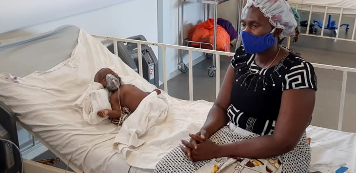
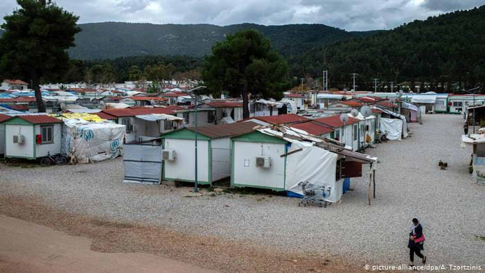
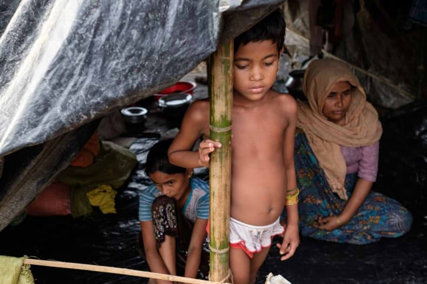

War, conflict and catastrophes drive many from their homes. Every day is unsafe and comes with many challenges, especially in regards to illness and assault. Covid-19 makes the situation worse.

Public health authorities have locked down two migrant camps after the residents tested positive for corona virus.

Camps have poor living conditions and are often overpopulated. This makes refugees extra vulnerable to illness, and often the access to health care is limited.

Poor water and sanitary systems, as well as the lack of food, contributes to a higher risk for disease.